Centro de Mesa en Sala o Comedor
Las bicicletas y triciclos portamacetas son ideales como punto focal sobre mesas de madera, consolas de recibidor o estantes abiertos con flores vivas o artificiales.
Iluminación Decorativa, Fuentes y Artesanías en Madera y Cemento
"Lo que tú sueñes, nosotros lo hacemos realidad"
Transformamos madera seleccionada, modelado en cemento y cuerda trenzada en piezas únicas de iluminación, fuentes de cascada y elementos decorativos hechos a mano.
JimsArt es un taller artesanal enfocado en el diseño y fabricación de lámparas, fuentes de agua en cascada, murales decorativos, maceteros y piezas ornamentales en madera y cuerda tejida. Combinamos técnicas manuales de modelado con madera seleccionada para ofrecer piezas exclusivas, duraderas y llenas de personalidad.
Surgió en la pandemia del 2020. Al pasar mucho tiempo en casa, nació la idea de crear piezas que no solo fueran llamativas y útiles para iluminar o ambientar, sino que también aportaran calidez, naturaleza y personalidad a cada espacio.
Selecciona una categoría para ver los productos terminados (haz clic en cualquier foto para verla en grande):

Circuito de caída continua con platos y cántaros de barro sobre base de relieve.

Estructura esculpida a mano en cemento con acabado tipo roca y flores decorativas.

Diseño compacto de niveles escalonados para mesas de centro, salas o recibidores.

Escultura con modelado de corteza natural, imagen central y caída serena de agua.
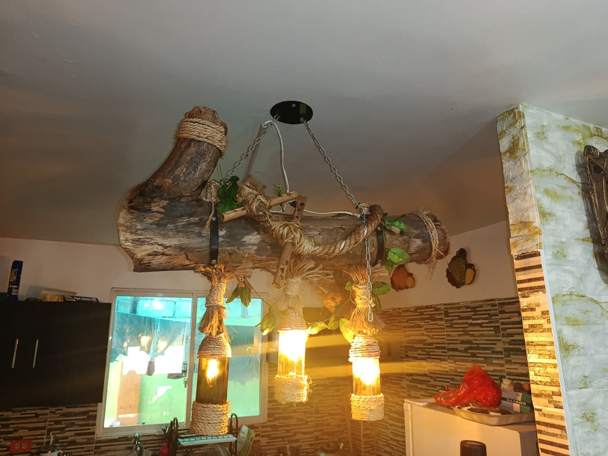
Tronco natural curado con bombillos colgantes para comedores y barras.
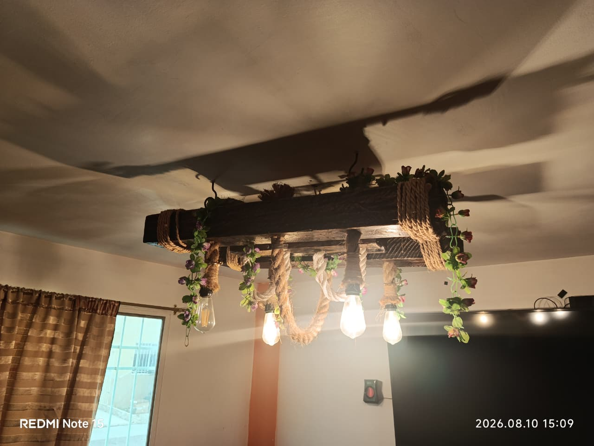
Viga de madera suspendida con enrollado de cuerda gruesa y follaje ornamental.

Estructura entintada con bombillos tipo vela para un ambiente tradicional.

Base esculpida en cemento con esfera luminosa para escritorios o mesas de noche.
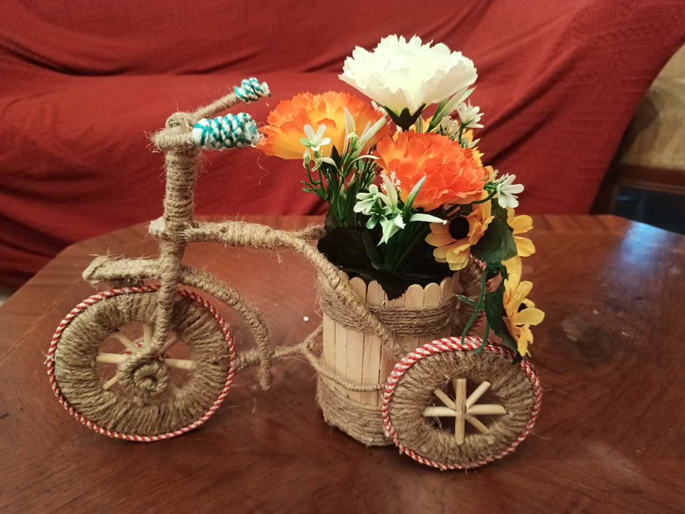
Bicicleta ornamental tejida con cuerda gruesa y canasta cilíndrica de varitas de madera para flores de centro de mesa.
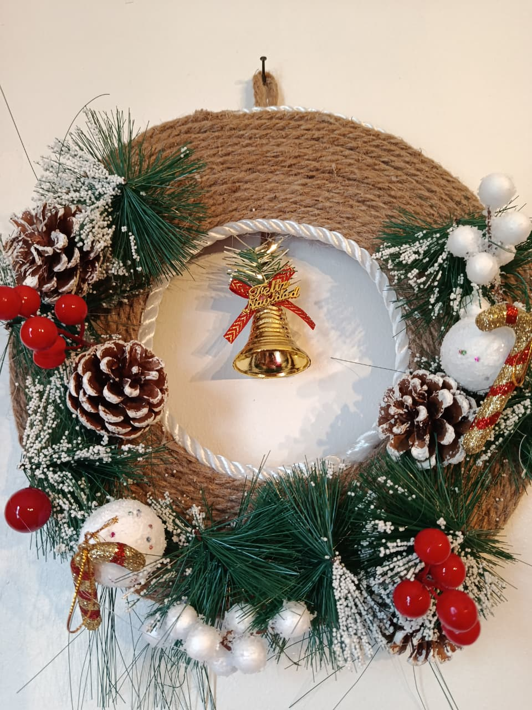
Aro circular envuelto en cuerda natural con ramas de pino nevadas, piñas secas, frutos rojos y campana dorada central.
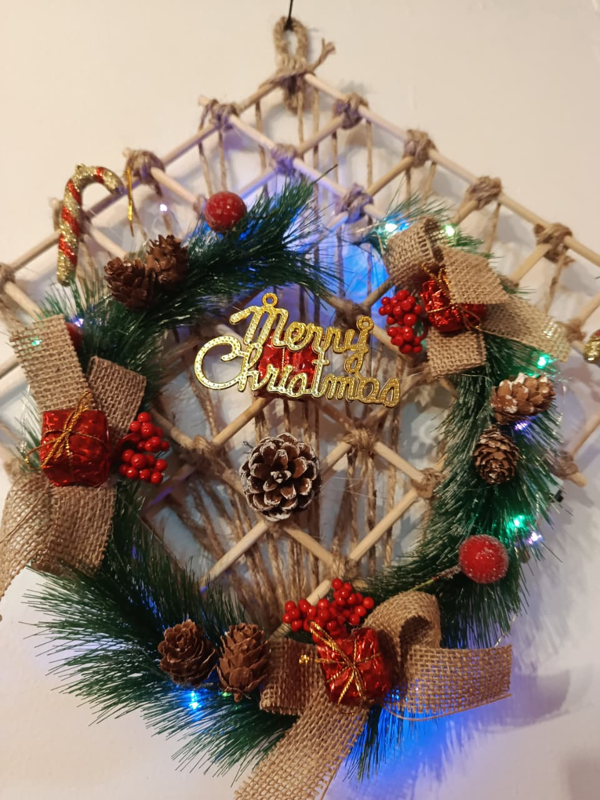
Estructura enrejada de varas de madera unidas con nudos de cuerda, decorada con corona navideña y lazos rústicos.
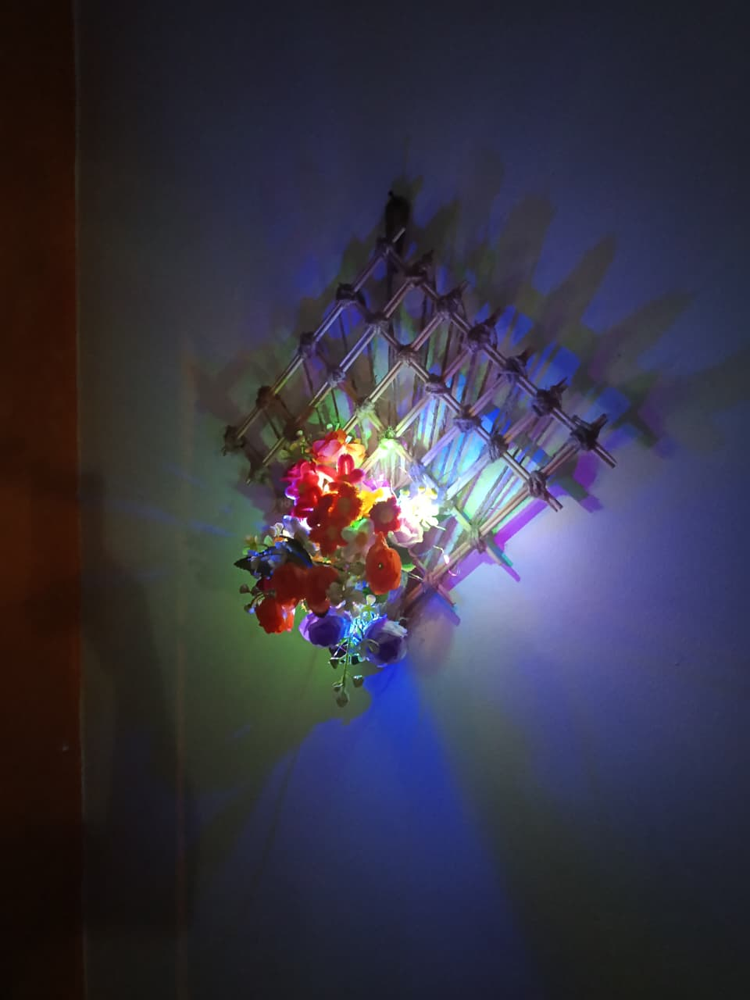
Adorno colgante en rombo con arreglo de flores e iluminación nocturna suave a batería para ambientar paredes interiores.
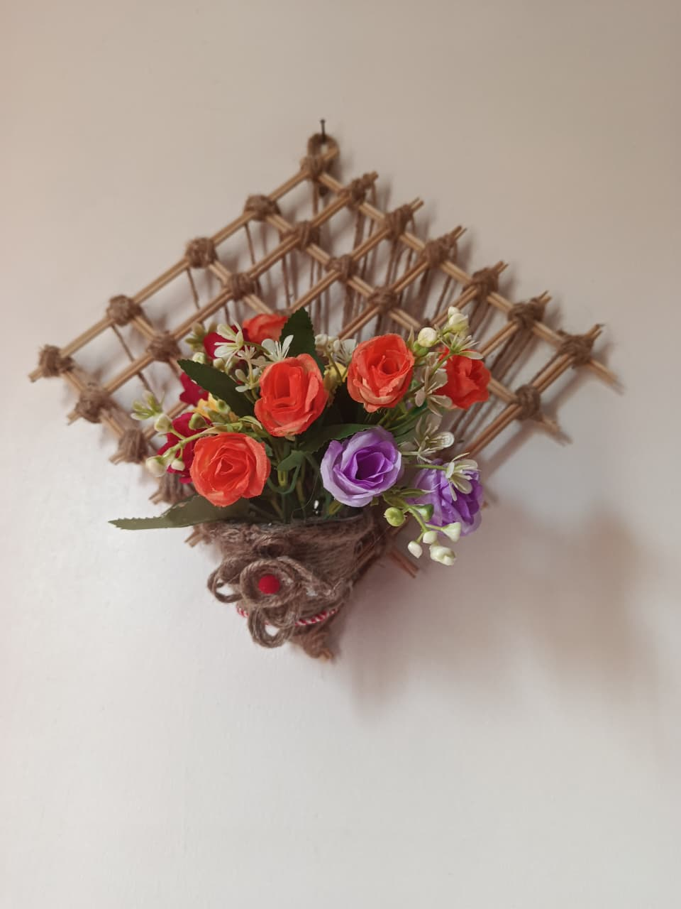
Estructura de madera tratada con cuerda tensada y canastilla frontal para flores artificiales o naturales secas.
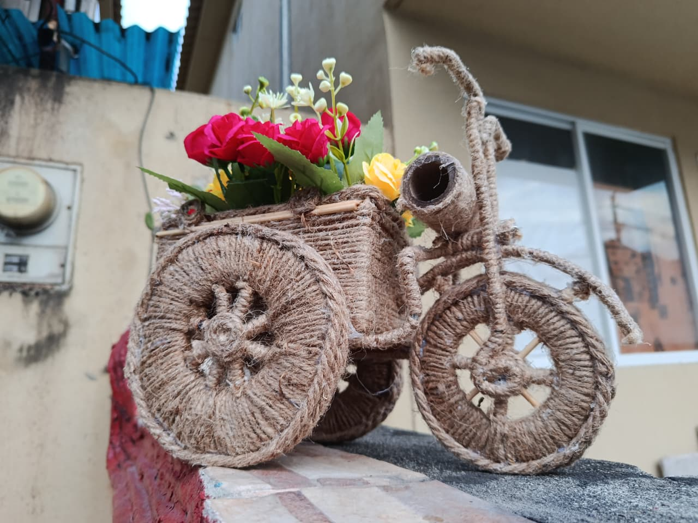
Triciclo de madera y cuerda con ruedas de rayos firmes y cajón posterior amplio para colocar macetitas o arreglos florales.
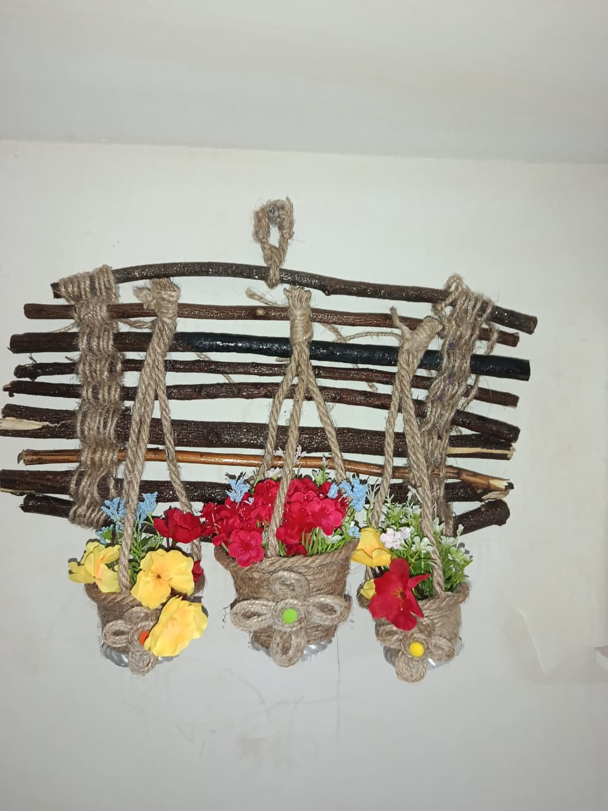
Base horizontal de leña natural tratada con tres canastitas tejidas que cuelgan a desnivel con flores.
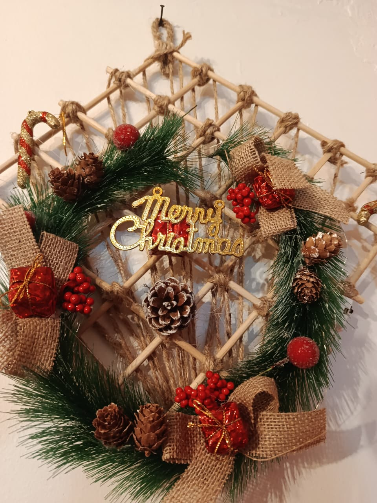
Panel en rombo con follaje de pino, detalles festivos e iluminación integrada para colgar en época de diciembre.
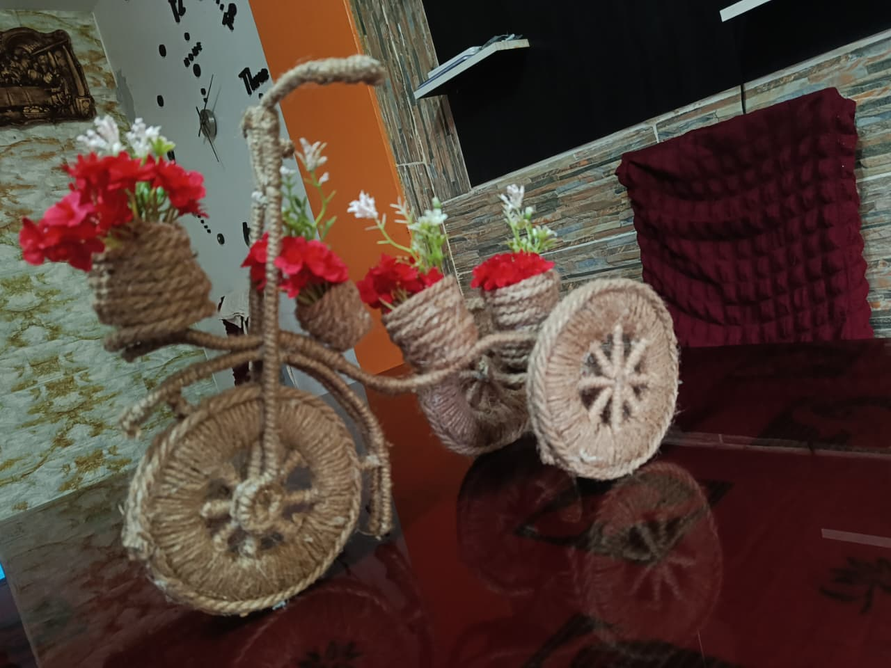
Pieza ornamental de mesa con tejido cerrado a mano y canastilla para centro de sala, recibidor o comedor.
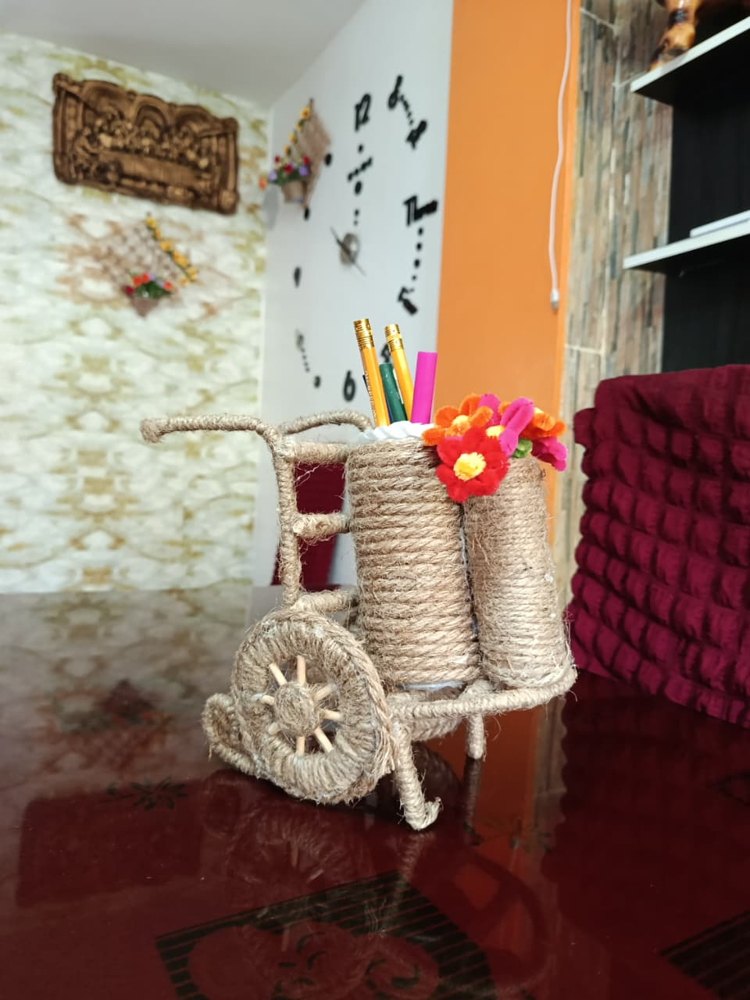
Organizador de escritorio ensamblado a pulso en madera con tejido firme para lápices y accesorios.
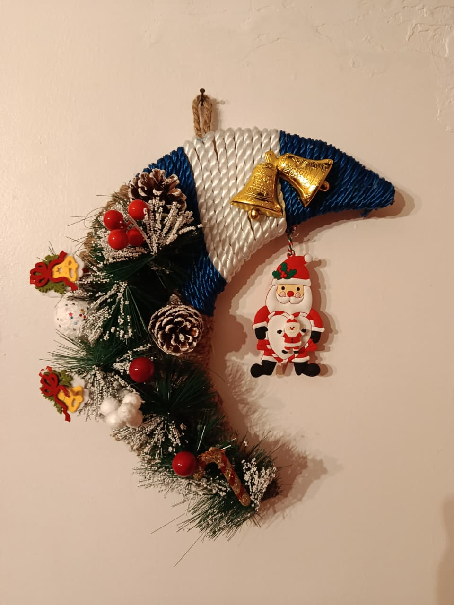
Adorno festivo en forma de luna con pino nevado, frutos rojos, lazo azul, cascabeles dorados y figura decorativa de Papá Noel.

Fondo en tonos cálidos con árbol modelado en cuerda y cántaros en relieve sobre bastidor.

Cuadro en fondo carmesí con estructura de árbol en alambre trenzado y flores decorativas.

Marco profundo con arreglo floral y elementos secos resguardados en vitrina.

Par de maceteros esféricos texturizados con acabado dorado para centros florales.

Vasija individual en cemento metalizado con base firme para arreglos de mesa.

Cuerpo facetado en cemento pintado a mano para pequeñas plantas o flores vivas.

Esfera con acabado plateado sobre peana escultórica para esquinas o estantes.
Diseños versátiles pensados para resaltar la calidez de cualquier rincón del hogar.
Las bicicletas y triciclos portamacetas son ideales como punto focal sobre mesas de madera, consolas de recibidor o estantes abiertos con flores vivas o artificiales.
Los cuadros vitrina, murales con cántaros y celosías de varas aportan textura, relieve y volumen a muros lisos.
Las fuentes de agua continuas y las lámparas combinan luz ambiental cálida y sonido relajante para salas o terrazas cubiertas.
Las coronas, medias lunas y enrejados festivos visten puertas principales y pasillos con un aire tradicional y duradero año tras año.
No trabajamos con líneas masivas. Cada modelo se inicia desde cero cuando lo solicitas, lo que permite realizar adaptaciones concretas:
Indícanos el nombre del diseño (ejemplo: Bicicleta con Canasta, Media Luna Navideña o Cascada Escalonada) y describe si requieres algún cambio de tamaño o color para coordinar la fabricación directamente.
Sigue estas recomendaciones básicas para que las piezas mantengan su firmeza y color por mucho tiempo.
Usa una brocha seca de cerdas suaves o un plumero para sacudir la cuerda tejida y las ramas sin deformar los nudos.
Recomendado para interiores o balcones bajo techo. Evita que la madera y la cuerda reciban agua directa.
En los modelos con luces LED, la cajita trasera cuenta con interruptor de fácil apertura para sustituir las pilas cuando se agoten.
"Detrás de cada pieza terminada hay horas de moldeado en cemento, texturizado a mano y pruebas de caída de agua. Cada obra comienza desde cero."


No. Tienen una pequeña bomba sumergible que hace recircular la misma agua. Solo se llena el contenedor y se conecta al tomacorriente de la casa.
Llevan boquillas comunes tipo E27 para que le puedas poner cualquier foco LED o foco vintage de luz cálida.
Sí. Como cada pieza se elabora a pulso en el taller, podemos adaptar el largo, ancho o colores de las flores según la mesa o pared donde vayas a ubicarlo.
Al ser un trabajo manual, normalmente toma entre 3 días a 2 semanas según el tamaño y la complejidad del trabajo.
Diseñamos piezas a la medida de tu espacio. Escríbenos para cotizar tu lámpara, fuente o artesanía.